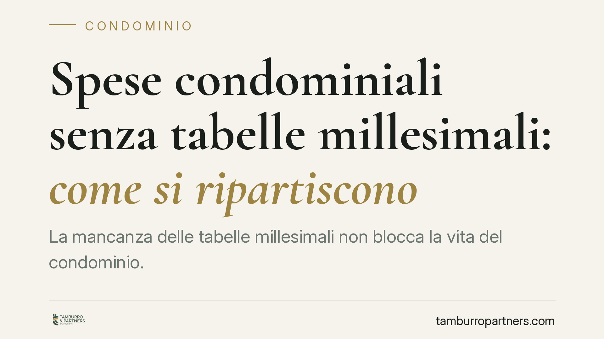

Spese condominiali senza tabelle millesimali: come si ripartiscono
La mancanza delle tabelle millesimali non blocca la vita del condominio. L'assemblea può ripartire le spese ordinarie a titolo di acconto, salvo conguaglio, ma incontra limiti precisi sulle spese straordinarie e sui criteri derogabili solo all'unanimità. Capire questi confini è decisivo per evitare delibere invalide e contenziosi tra condomini.

Il problema: edifici senza tabelle approvate
Molti condomini, soprattutto quelli più datati o nati da frazionamenti successivi, non dispongono di tabelle millesimali approvate. Le tabelle sono lo strumento che traduce in quote il valore proporzionale di ciascuna unità immobiliare rispetto all'intero edificio. In loro assenza sorge la domanda pratica: su quale base si ripartiscono le spese comuni?
La risposta non è l'immobilismo. L'ordinamento consente al condominio di funzionare anche senza tabelle, purché vengano rispettati i criteri legali di riparto e i limiti dei poteri assembleari.
Inquadramento normativo
Il riferimento centrale è l'art. 1123 cod. civ., che fissa il principio: le spese per la conservazione e il godimento delle parti comuni si ripartiscono in proporzione al valore della proprietà di ciascuno, salvo diversa convenzione. Le tabelle millesimali sono lo strumento attuativo di questo principio, non la sua fonte: il criterio del valore proporzionale vale anche quando le tabelle non esistono.
L'art. 68 disp. att. cod. civ. disciplina la formazione e l'allegazione delle tabelle al regolamento, ma la loro approvazione non è condizione di validità delle delibere di spesa. L'assemblea mantiene le competenze dell'art. 1135 cod. civ. (approvazione del rendiconto e del riparto) e delibera con i quorum dell'art. 1136 cod. civ.
La Cassazione civile, Sezione II, ha chiarito il punto distinguendo due piani. La gestione ordinaria può proseguire: l'assemblea, a maggioranza, può approvare una ripartizione provvisoria a titolo di acconto, salvo conguaglio una volta approvate le tabelle. Diverso il discorso per le spese straordinarie e per i criteri che derogano alla proporzionalità legale, dove i margini si restringono.
Nullità o annullabilità: una distinzione che pesa
Il regime di invalidità della delibera cambia le regole del gioco, soprattutto per i termini di impugnazione.
È nulla la delibera che adotta un criterio di riparto diverso da quello legale senza il consenso di tutti i condomini: modificare stabilmente i criteri dell'art. 1123 richiede l'unanimità, perché incide su diritti individuali. La nullità può essere fatta valere senza limiti di tempo e da chiunque vi abbia interesse.
È invece annullabile la delibera che applica male un criterio in sé legittimo, ad esempio con errori di calcolo o nell'individuazione delle quote. In questo caso vale il termine dell'art. 1137 cod. civ.: trenta giorni dalla deliberazione per i presenti dissenzienti o astenuti, dalla comunicazione del verbale per gli assenti. Scaduto il termine, la delibera si consolida.
Implicazioni pratiche per i condomini
Per il singolo condomino la conseguenza è concreta: in mancanza di tabelle si può essere chiamati a versare quote calcolate in via provvisoria. Il pagamento richiesto a titolo di acconto è dovuto, ma resta soggetto a conguaglio quando il valore delle quote sarà definito.
Per l'amministratore e per l'assemblea il rischio è deliberare oltre i propri poteri: una ripartizione che altera stabilmente i criteri legali senza unanimità espone la delibera a nullità, con possibili richieste di ripetizione delle somme versate e tensioni durature nel condominio.
Attenzione anche alla natura della spesa. Per gli interventi straordinari di rilievo la prudenza suggerisce di procedere solo dopo aver definito un criterio di riparto solido, per non esporre la delibera a impugnazione proprio sull'esborso più pesante.
Cosa fare in concreto
- Verificate l'esistenza e lo stato delle tabelle: controllate regolamento, allegati e verbali di approvazione prima di ogni riparto rilevante.
- Qualificate il tipo di spesa: per l'ordinaria è ammessa la ripartizione provvisoria in acconto; per la straordinaria valutate con cautela.
- Deliberate la ripartizione provvisoria indicando espressamente che è a titolo di acconto, salvo conguaglio, per non alterare i criteri legali.
- Promuovete la formazione delle tabelle millesimali, così da sostituire la provvisorietà con un criterio stabile e opponibile.
- Rispettate i termini: se ritenete viziata una delibera, agite entro trenta giorni per l'annullabilità; per la nullità non c'è decadenza, ma l'intervento tempestivo evita conguagli complessi.
Disclaimer
Contributo informativo a cura di Tamburro & Partners - Avv. Giuseppe Tamburro. Non costituisce parere legale.
Ogni condominio ha una storia a sé.
Se gestisci un'amministrazione e vuoi un confronto su una specifica questione condominiale, scrivi allo studio. Ti rispondiamo entro un giorno lavorativo.